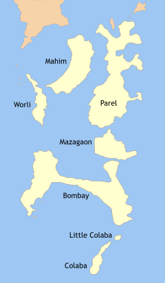
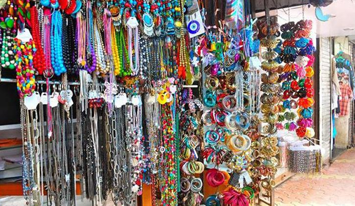
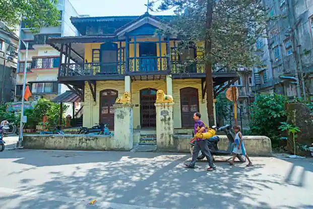
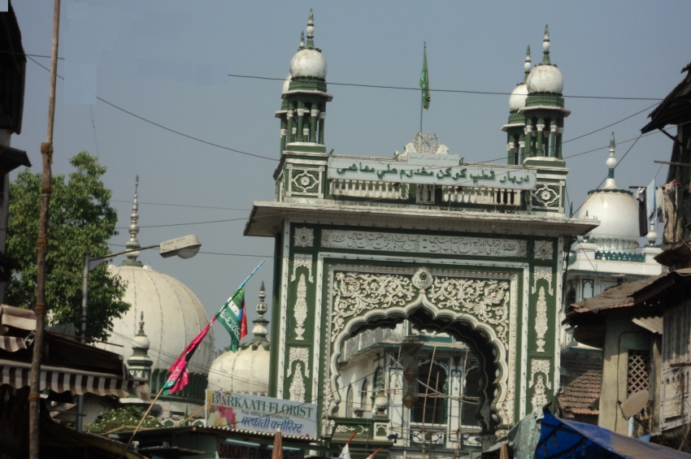

"aae dil hai mushkil jeena yaha
jara hatke, jara bachke
ye hai बॉम्बे meri jaan..."
Come, explore with us!
The 7 islands of बॉम्बे.
Peek into the Past.........

Charles II of England (1630-1685) and Catherine of Braganza of Portugal
What the Company had come into possession were seven islands, named Bombay, Mazagaon, Parel, Worli, Mahim, Little Colaba or the Old Woman's Island, and Colaba. Since 1534 the islands had been a part of the Portuguese territory. In 1661 Bombay was given to the English Crown through Article 11 of the treaty (Treaty of Peace and Alliance between Portugal and Great Britain and of marriage of Charles II. with the Infanta of Portugal, concluded at London, June 23, 1661 ) accompanying the marriage of King Charles II and Catherine of Braganza of Portugal.
Isle of Bombay

Isle of Bombay was one of the Seven Islands of Bombay, an archipelago of islands that were, in the eighteenth century, connected to form the area of the modern city of Bombay in India. The island was the main harbour and the Base of the British from where the city expanded.
Isle of Colaba
The name Colaba comes from Kolabhat, a word in the language of Kolis, the indigenous inhabitants of the islands, before the arrival of the Portuguese.[2] The area that is now Colaba was originally a region consisting of two islands: Colaba and Little Colaba (or Old Woman's Island). The island of Colaba was one of the Seven Islands of Mumbai ruled by the Portuguese. The Portuguese had acquired these lands from the Sultanate of Cambay by the Treaty of Vasai (1534). The group of islands was given by Portugal to Charles II of England as a dowry when he married Catherine of Braganza in 1661. The cession of Mumbai and dependencies was strongly resented by Portuguese officials in Goa and Mumbai, who resisted transfer of possession for several years, while the English representatives were confined to the island of Anjediva while negotiations continued. Angered by the back-tracking, Charles II leased these lands to the British East India Company for a nominal annual rent. Gerald Aungier, second Governor (1672), and the president of the English settlement of Surat, took possession of Colaba and Old Woman's Island on behalf of the Company in 1675.
Isle of Parel
Isle of Worli

Worli (ISO: Varaḷī, [ʋəɾ(ə)ɭiː]) is a locality in Central Mumbai, Maharashtra, India. It is one of the four peninsulas of Mumbai while the other being Colaba, Bandra and Malabar Hill. The sea connects it with Bandra via the Bandra-Worli Sea Link. Historic spellings include Warli, Worlee, Varli, and Varel.[1] Originally Worli was a separate island, one of the Seven Islands of Bombay which were ceded by the Portuguese to England in 1661, it was linked up with the other islands in the 19th century. In the 1990s, a group of terrorists attacked a building in Worli as well as major buildings in the city.
Old Woman's Island

The Old Woman's Island, also known as Little Colaba is one of the seven islands composing the city of Mumbai, India, and part of the historic Old Mumbai.[1][2] The Colaba Causeway built in 1838, connected this last island to the mainland of Mumbai, along with the island of Colaba.[1]
Isle of Mazagaon
Mazagaon, also spelled Mazgaon and Mazagon (Portuguese rule Mazagão[1]), and pronounced by the Catholics as 'Mazgon' or 'Maz-a-gon' and the Marathi-speakers as Mazhgav[citation needed], is one of the seven islands of Mumbai.
Isle of Mahim
The name Mahim is derived from the ancient Mahikavati meaning "miraculous" in Sanskrit. Other historical names for the area include Mahimawati, Maijim, and Mejambu.[1] Mahim was one of the seven islands that originally made up Mumbai. Mahim, or Mahikavati as it was known, was the capital of Raja Bhimdev, who reigned over the region in the 13th century. He built a palace and a court of justice in Prabhadevi, as well as the first Babulnath temple. In 1343, this island was possessed by the Delhi Sultanate. It was in their reign that the old Mahim mosque was built. A dargah of Makhdoom Ali Mahimi was built here in 1431.